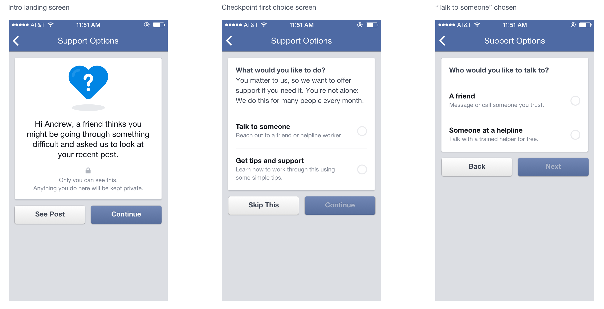
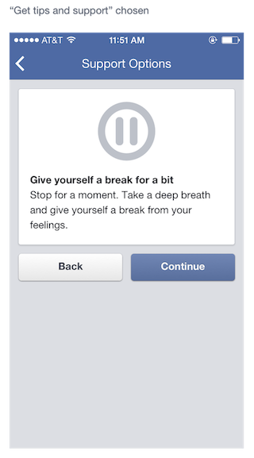
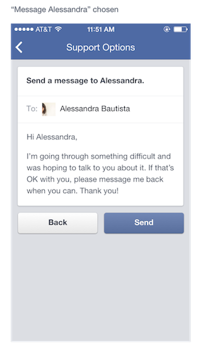

Building Facebook's first suicide prevention experience
Connecting people with support that matters most.
Context
When a Facebook user reported a friend's post that suggested suicidal ideation, a specially trained team reviewed it. If the post met policy criteria, the person who made the report was shown information about the National Suicide Prevention Lifeline and a link to connect with a crisis counselor.
Use of these support options was low — even as the number of reported posts was rising. Our challenge, as the Compassion team, was to help people get support in a way that felt genuinely compassionate, without alienating the very users we were trying to reach.
I had no prior experience writing for people in mental health crisis. That became one of the most important parts of the process.
Impact
The problem
Use of the support options shown to reporting users was low, but the volume of reported posts was increasing. The existing experience felt clinical and passive — it presented resources but didn't acknowledge what the person was actually going through. We needed to help users get support without alienating them.
Research
Before writing a word of copy, I advocated for bringing in outside expertise. I worked closely with the PM, designer, and researcher to partner with leading suicidologists and organizations with lived-experience perspectives:
Partners
- Forefront Suicide Prevention
- Now Matters Now
- National Suicide Prevention Lifeline
- Save.org
Key insight
- Suicidal thoughts are a symptom of deep suffering and a search for relief — not a fixed state
- Stigmatizing language (e.g. framing suicide as a crime) leads to isolation, not support
- People respond to knowing they're not alone
Strategy
Based on what I learned, I developed a content approach centered on one idea: acknowledge the underlying suffering, not just the crisis.
What helps people in this moment isn't a list of resources — it's a brief shift in perspective, knowing someone sees their pain, and having an easy path to connect with someone who can help.
Principle: Avoid stigmatizing language. Don't normalize or quantify ("we do this for many people"). Design for agency, not urgency. Give people meaningful choices, not a single overwhelming ask.
What changed
Working with the designer, I co-created the information architecture for the experience. We landed on a four-stage structure:
01
Context
Explain why the user is seeing this.
02
Care
Acknowledge their pain without pity.
03
Choices
Offer meaningful paths to safety.
04
Support
Make it easy to reach and sustain help.
I also translated clinical interventions from Dialectical Behavioral Therapy (DBT) into practical, accessible activity suggestions — things like getting outside, being creative, or soothing your senses — so users had something tangible to do if they weren't ready to reach out to someone.
We partnered with a suicidologist and our researcher to concept-test the flow with people who had lived experience with suicidal thoughts. The research team conducted the sessions; I watched and listened from another room.

Two key changes came from testing:
We removed the normalization line. "We do this for many people every month" was intended to reduce stigma, but the experts told us it could backfire — implying that suicidal thoughts are common can sometimes reinforce them. I cut it.
We added a pause screen. Participants said jumping directly into tips and resources felt overwhelming. We added a gentle interstitial — "Give yourself a break for a bit" — to create space before presenting options.

One of the most impactful additions was an editable sample message for users who wanted to reach out to a friend but didn't know how. Asking for support during a mental health crisis is genuinely hard. Pre-written, human language — that users could personalize — removed a real barrier.

We also created a resource center for friends and family, based on expert and participant input, recognizing that the people around someone in crisis often don't know what to say either.
My contributions
Advocated for expert partnership · Familiarized myself with suicide prevention research and clinical strategy · Co-created the user flow and information architecture with the designer · Wrote all UX copy in the experience · Developed writing guidelines and a terms glossary for the team